Povrchová vrstva kapalin
Pokusy: volná hladina kapaliny se chová jako pružná (elastická) blána.
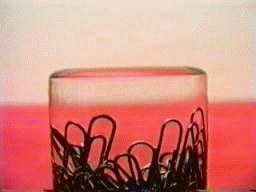
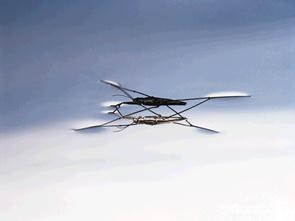
Povrch kapaliny se chová, jako by byl pokryt tenkou napjatou blánou.
Sféra molekulového působení
Molekuly kapaliny na sebe navzájem působí přitažlivými silami, jejichž velikost s rostoucí vzdáleností klesá — od jisté vzdálenosti jsou tyto síly zanedbatelné. Tato vzdálenost se nazývá poloměr molekulového působení $r_m$ (řádově $r_m \approx 10^{-9}\,\text{m} = 1\,\text{nm}$) a kulová oblast o tomto poloměru se nazývá sféra molekulového působení.
Je-li sféra molekulového působení dané molekuly celá uvnitř kapaliny, jsou přitažlivé síly od okolních molekul rozloženy souměrně a jejich výslednice je nulová. Je-li molekula blíže k volné hladině než $r_m$, sféra zasahuje i do vzduchu (kde je molekul mnohem méně), a proto výsledná síla $\vec F_V$ na tuto molekulu není nulová — směřuje kolmo k volné hladině dovnitř kapaliny.
Povrchová vrstva
Povrchová vrstva kapaliny je tvořena molekulami, jejichž vzdálenost od volné hladiny je menší než $r_m$. Každá molekula v této vrstvě je přitahována výslednou silou $\vec F_V$ směřující do kapaliny.
tloušťka povrchové vrstvy $\approx r_m \approx 10^{-9}\,\text{m}$
Povrchová energie a povrchové napětí
Přemístíme-li molekulu z nitra kapaliny do povrchové vrstvy, musíme vykonat práci proti síle $\vec F_V$ (ta míří opačně, tedy dovnitř kapaliny). Molekuly v povrchové vrstvě proto mají oproti molekulám uvnitř kapaliny větší potenciální energii.
Povrchová energie $E_S$ je energie povrchové vrstvy kapaliny — je součástí celkové vnitřní energie kapaliny.
Povrchové napětí σ
Uvažujme kapalinu téhož objemu v různých nádobách — velikost volné hladiny (povrchu) $S$ může být v každé nádobě jiná, a tedy i povrchová energie $E_S$ je jiná. Platí
$\Delta E_S = \sigma \cdot \Delta S$
kde $\sigma$ je povrchové napětí — závisí na druhu kapaliny, na okolním prostředí (s jakou látkou kapalina sousedí) a na teplotě (s rostoucí teplotou povrchové napětí klesá).
Jednotka: $[\sigma] = \text{N}\cdot\text{m}^{-1} = \text{J}\cdot\text{m}^{-2}$ (energie na jednotku plochy).
Orientační hodnoty povrchového napětí (pokojová teplota)
| Kapalina (rozhraní se vzduchem) | σ (mN·m⁻¹) |
|---|---|
| voda (20 °C) | ≈ 73 |
| rtuť (20 °C) | ≈ 486 |
| ethanol (líh) | ≈ 22 |
| mýdlový roztok | ≈ 25–30 |
| olej (rostlinný) | ≈ 32 |
Hodnoty jsou přibližné a slouží k porovnání řádů veličin.
Kapalina směřuje k minimální povrchové energii
Kapalina se snaží zmenšit svůj povrch na nejmenší možnou velikost, což odpovídá minimální povrchové energii. Proto volné kapky (mlha, rosa, kapky deště) mají kulový tvar — koule má ze všech těles daného objemu nejmenší povrch.
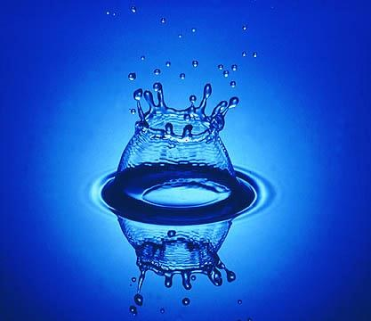
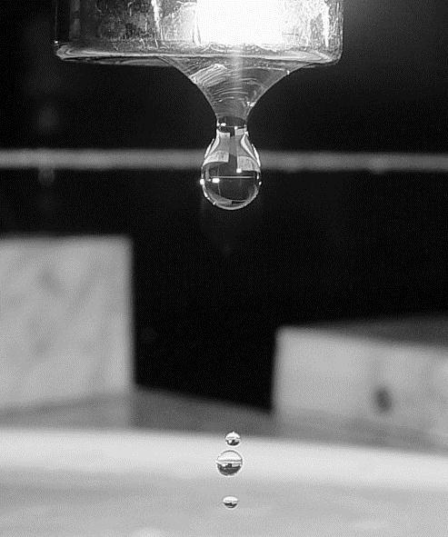
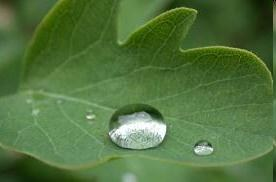
Řešený příklad:
Drobné kapičky mlhy o poloměru $r = 2{,}0\ \mu\text{m}$ splynou v jedinou kapku o poloměru $R = 2{,}0\,\text{mm}$. Určete změnu povrchové energie. ($\sigma = 73\,\text{mN}\cdot\text{m}^{-1}$)
Řešení: Nejprve určíme, kolik malých kapiček tvoří jednu velkou kapku. Uvědomíme si, že objem všech malých kapek (jejich počet označíme $n$) je roven objemu velké kapky. Objem $n$ malých kapiček je $n\cdot \frac{4}{3}\pi r^3$, objem velké kapky je $\frac{4}{3}\pi R^3$.
Z rovnosti objemů (po vykrácení $\frac{4}{3}\pi$) plyne $n r^3 = R^3$, z čehož vychází $n = (R/r)^3 = 10^9$ kapiček (jedna miliarda).
Dále určíme změnu povrchové energie podle vztahu $\Delta E_S = \sigma \Delta S$, kde $\Delta S$ je rozdíl povrchu všech malých kapiček a jedné velké kapky. Celkový povrch $n$ malých kapiček je $n\cdot 4\pi r^2$, povrch velké kapky je $4\pi R^2$. Takže:
$\Delta E_S = \sigma(4\pi R^2 - n\cdot4\pi r^2) \approx -3{,}7\,\text{mJ}$ — povrchová energie se zmenší (uvolní se jako teplo), protože jedna velká kapka má mnohem menší celkový povrch než miliarda drobných kapiček stejného celkového objemu.
Povrchová síla
Mýdlová blána napnutá v drátěném rámu s pohyblivou tyčkou se snaží zmenšit svůj povrch a posouvá tyčku dovnitř rámu. Na tyčku působí povrchová síla $\vec F$, kolmá na tyčku a tečná k povrchu blány.
Odvození vzorce pro povrchovou sílu
Zavěsíme-li na tyčku (délky $l$) závaží o tíze $F_G$, blána má dva povrchy (přední a zadní), takže v rovnováze:
$2F = F_G \;\Rightarrow\; F = \dfrac{F_G}{2}$
Posuneme-li tyčku o $\Delta x$, vykonaná práce $W = 2F\Delta x$ se rovná přírůstku povrchové energie obou ploch blány $\Delta E_S = \sigma \cdot 2l\Delta x$:
$2F\Delta x = \sigma \cdot 2l\Delta x$
$F = \sigma l$
Povrchová síla je tedy přímo úměrná délce $l$ hranice, podél které povrch působí. Odtud plyne i definiční vztah pro povrchové napětí:
$\sigma = \dfrac{F}{l}$
Pokusy s mýdlovou blánou
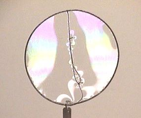
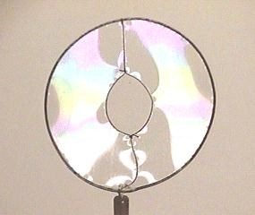
Dokud je blána vně i uvnitř smyčky, síly na nit z obou stran se navzájem vyruší a nit zůstává volná. Protrhneme-li blánu uvnitř smyčky, působí na nit už jen povrchová síla vnější blány — ta se smršťuje a táhne nit do tvaru, který uzavírá největší možnou plochu při daném obvodu, tedy do kružnice.
Odkapávání z kapiláry
Tíha rostoucí kapky se postupně zvětšuje, zatímco povrchová síla, která kapku drží na okraji trubice, je úměrná obvodu kapiláry ($F=\sigma l = \sigma\cdot 2\pi r$) a zůstává přibližně stejná. Kapka se utrhne ve chvíli, kdy tíha $F_G$ překoná tuto sílu.
Jevy na rozhraní kapalina – pevná látka
V blízkosti stěny nádoby (kde se stýká kapalina, pevná látka a vzduch) je volná hladina zakřivená.
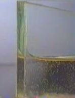
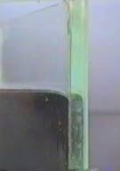
Síly na molekulu na rozhraní kapalina – stěna – vzduch
Na molekulu kapaliny u stěny působí: $\vec F_1$ – výslednice sil od kapaliny, $\vec F_2$ – výslednice sil od stěny, $\vec F_3$ – výslednice sil od vzduchu, $\vec F_G$ – tíha molekuly. Protože $F_1, F_2 \gg F_G, F_3$, síly $F_G$ a $F_3$ zanedbáme. Výsledná síla $\vec F_V = \vec F_1 + \vec F_2$ musí být v rovnováze kolmá k volné hladině — tato podmínka určuje, zda je hladina konkávní, nebo konvexní.
Úhel smáčení (styčný úhel) ϑ
Úhel smáčení $\vartheta$ je úhel mezi povrchem kapaliny a stěnou nádoby v místě jejich styku.
$0 \le \vartheta < \dfrac{\pi}{2}$
kapalina smáčí stěny, hladina konkávní
$\dfrac{\pi}{2} < \vartheta \le \pi$
kapalina nesmáčí stěny, hladina konvexní
Kapilarita
V úzké trubici (kapiláře) je zakřivení volné hladiny výraznější než v široké nádobě, a proto se v kapiláře projeví výsledná síla $\vec F_V$ znatelnou kapilární výškou hladiny.
- Kapalina, která smáčí stěny kapiláry (např. voda ve skle), v ní vystoupá nad volnou hladinu v širší nádobě.
- Kapalina, která stěny nesmáčí (např. rtuť ve skle), v kapiláře klesne pod volnou hladinu.
Kapilární tlak
Zakřivený povrch kapaliny v kapiláře vyvolává tzv. kapilární tlak $p_k$, který je přímo úměrný povrchovému napětí a nepřímo úměrný vnitřnímu poloměru $R$ kapiláry (resp. poloměru křivosti menisku):
$p_k = \dfrac{2\sigma}{R}$
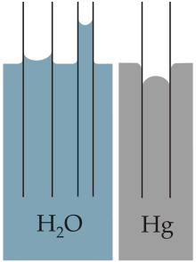
Výška kapilárního vzestupu / poklesu
Výška $h$ se ustálí, jakmile se kapilární tlak vyrovná s hydrostatickým tlakem sloupce kapaliny $p_h=\rho g h$:
$p_k = p_h \;\Rightarrow\; \dfrac{2\sigma}{R} = \rho g h$
$h = \dfrac{2\sigma}{\rho g R}$
Výška $h$ je nepřímo úměrná vnitřnímu poloměru trubice $R$ — čím tenčí kapilára, tím vyšší (nebo hlubší) vzestup.
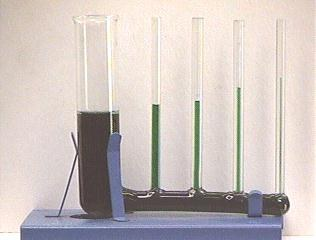
Řešené příklady:
a) Jaký je vnitřní průměr kapiláry, vystoupí-li v ní voda do výšky $h=2{,}0\,\text{cm}$ nad hladinu v širší nádobě? ($\sigma=73\,\text{mN}\cdot\text{m}^{-1}$)
Řešení: $R=\dfrac{2\sigma}{\rho g h}\approx 0{,}74\,\text{mm} \Rightarrow d=2R\approx 1{,}5\,\text{mm}$.
b) Jaký tlak má vzduch v kulové bublině o průměru $1\,\mu\text{m}$ v hloubce $5\,\text{m}$ pod hladinou vody při atmosférickém tlaku $1000\,\text{hPa}$?
Řešení: $p = p_a + \rho g h_{hloubka} + \dfrac{2\sigma}{R} \approx 10^5 + 4{,}9\cdot10^4 + 2{,}92\cdot10^5 \approx 0{,}44\,\text{MPa}$. (U tak malé bublinky je kapilární tlak dominantní složkou!)
Kapilarita kolem nás
Vzlínání kapaliny v tenkých kanálcích a vláknech pozorujeme všude kolem nás: voda vzlíná do utěrky při utírání, do knotu petrolejové lampy, vlhkost vzlíná zdmi budov, kapaliny vzlínají vlásečnicemi (xylémem) rostlin od kořenů vzhůru.
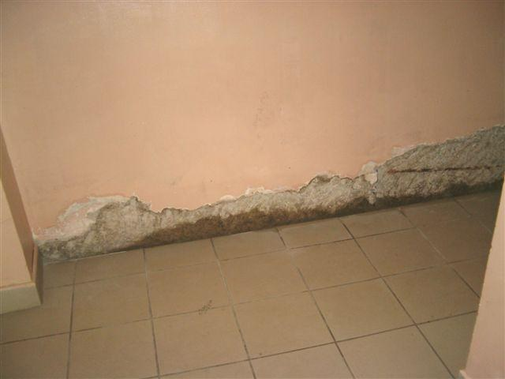
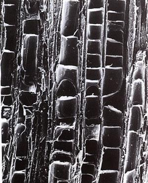
Teplotní objemová roztažnost kapalin
Kapalina nemá stálý tvar, a proto u ní (na rozdíl od pevných látek) nemá smysl rozlišovat délkovou a objemovou roztažnost — sleduje se pouze objemová roztažnost. Naprostá většina kapalin se při zahřívání rozpíná.
$V = V_0(1 + \beta\, \Delta t)$
$V_0$ – počáteční objem | $\Delta t$ – změna teploty | $\beta$ – teplotní součinitel objemové roztažnosti ($\text{K}^{-1}$)
Orientační hodnoty součinitele β
| Kapalina | β (K⁻¹) |
|---|---|
| voda (20 °C) | ≈ 2,1 · 10⁻⁴ |
| rtuť | ≈ 1,82 · 10⁻⁴ |
| ethanol (líh) | ≈ 1,1 · 10⁻³ |
| olej | ≈ 7 · 10⁻⁴ |
Hodnoty jsou přibližné, ve skutečnosti mírně závisí na teplotě.
Anomálie vody
Voda se chová výjimečně: v rozmezí teplot $0\,^\circ\text{C}$ až přibližně $3{,}98\,^\circ\text{C}$ (běžně se uvádí $4\,^\circ\text{C}$) se při zahřívání naopak smršťuje — teprve nad touto teplotou se chová „normálně“ a rozpíná se. Voda má tedy při $\approx 4\,^\circ\text{C}$ svou největší hustotu.
Díky této anomálii led plave na hladině a v zimě rybníky a jezera nezamrzávají do dna — u dna zůstává voda o teplotě kolem $4\,^\circ\text{C}$ (nejhustší), zatímco led se tvoří na povrchu, což umožňuje přežití vodních organismů.
Využití: kapalinové teploměry
Rtuťové a lihové teploměry využívají toho, že objemová roztažnost kapaliny (rtuti, lihu) je mnohem větší než roztažnost skleněné nádobky — pozorovaný posun hladiny v trubici teploměru tak v podstatě odpovídá roztažnosti samotné kapaliny.
Řešený příklad:
Baňka lihového teploměru obsahuje $V_0 = 1{,}0\,\text{cm}^3$ ethanolu při $20\,^\circ\text{C}$. O kolik se zvětší jeho objem při ohřátí na $40\,^\circ\text{C}$? ($\beta \approx 1{,}1\cdot10^{-3}\,\text{K}^{-1}$)
Řešení: $\Delta V = V_0\beta\Delta t = 1{,}0 \cdot 1{,}1\cdot10^{-3}\cdot 20 \approx 0{,}022\,\text{cm}^3$ — toto nepatrné zvětšení objemu v úzké trubici teploměru vyvolá dobře čitelný posun hladiny.
Povrchově aktivní látky (tenzidy)
Povrchově aktivní látky (tenzidy, surfaktanty) jsou látky, které při rozpuštění v kapalině výrazně snižují její povrchové napětí. Typickým příkladem jsou mýdla a saponáty (proto se ostatně mýdlová blána — s $\sigma \approx 25$–$30\,\text{mN/m}$ — snadno napíná a vydrží mnohem déle než blána z čisté vody, jejíž vysoké povrchové napětí ji naopak činí křehkou a nestabilní).
Molekula tenzidu má dvě odlišné části: hydrofilní („vodu milující“) hlavu, která se orientuje do vody, a hydrofobní („vodu odpuzující“) ocas, který se orientuje k vzduchu (nebo k tuku). Molekuly se proto hromadí na povrchu kapaliny a oslabují síly mezi molekulami vody v povrchové vrstvě, čímž snižují povrchové napětí σ.
Využití v praxi
- Mýdla a prací prostředky: nižší povrchové napětí umožňuje vodě lépe smáčet mastnotu a nečistoty, které se pak snáze odplavují.
- Plicní surfaktant: přirozená povrchově aktivní látka vystýlající plicní sklípky (alveoly) — snižuje jejich povrchové napětí a brání jejich zhroucení při výdechu; u předčasně narozených dětí s nedostatkem surfaktantu hrozí syndrom dechové tísně.
- Smáčedla v zemědělství a průmyslu: přidávají se do postřiků, aby kapky lépe pokryly povrch listů (zmenšením úhlu smáčení).